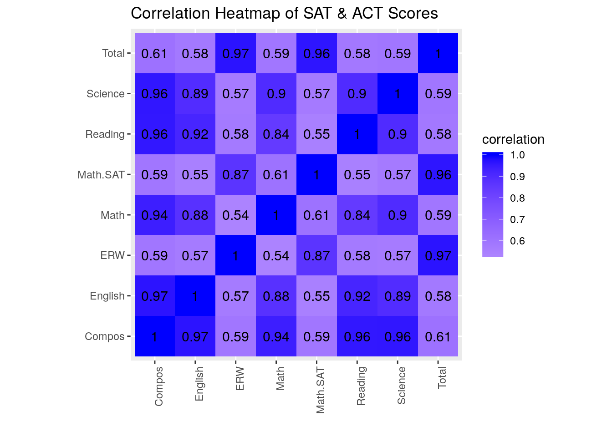
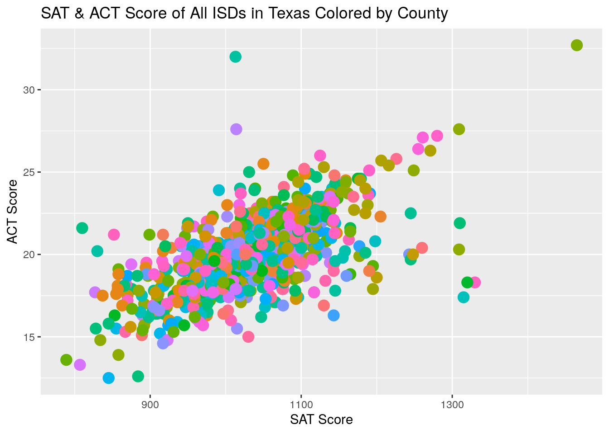
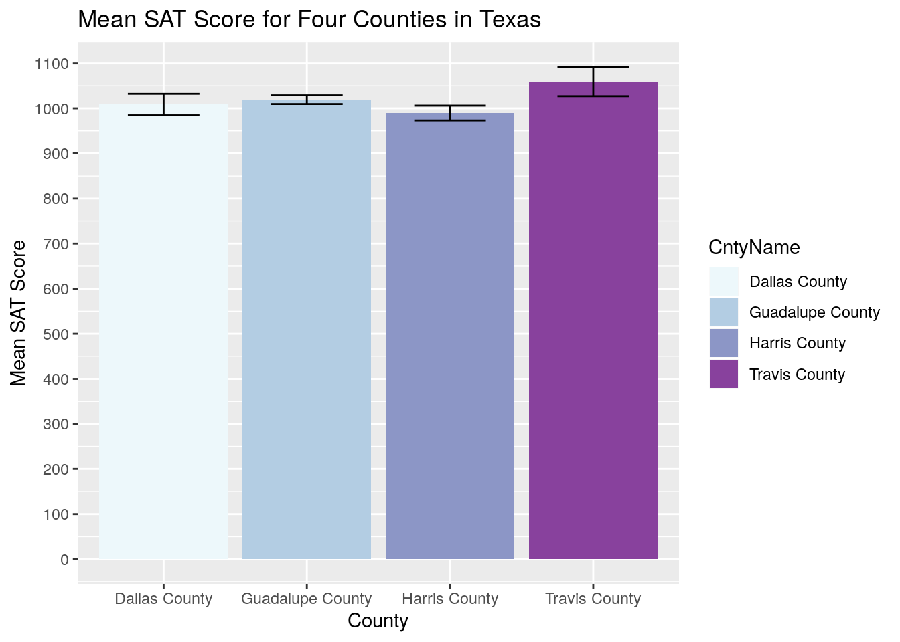
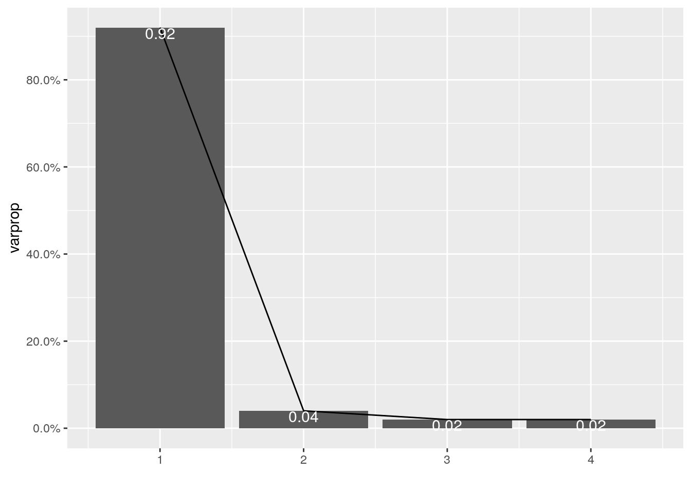
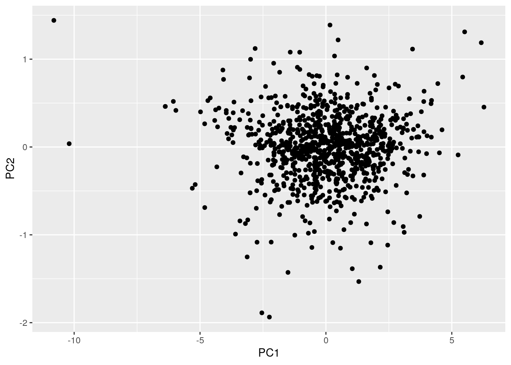
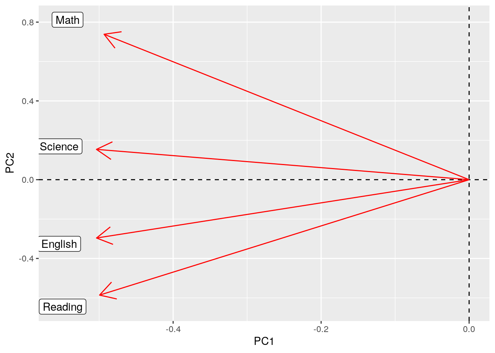

For this project, I selected SAT and ACT exam scores in the state of Texas for the class of 2017, organized by school district. I chose this data because as I was scrolling through hundreds of datasets, the same information for California appeared and I decided to do some research and see if Texas had the same information available. Once I found the data, I became very intrigued by how the data differs so greatly over the whole state. The Texas Education Agency website had this information for several graduation years so I decided to choose my own high school graduation year.
library(ggplot2)
library(tidyverse)
sat_district_data_class_2017 <- read.csv("sat_district_data_class_2017.csv")
act_district_data_class_2017 <- read.csv("act_district_data_class_2017.csv")
glimpse(sat_district_data_class_2017)## Observations: 46,944
## Variables: 15
## $ Group <fct> All Students, African American, American Indian, Asia…
## $ District <fct> =001902, =001902, =001902, =001902, =001902, =001902,…
## $ DistName <fct> Cayuga ISD, Cayuga ISD, Cayuga ISD, Cayuga ISD, Cayug…
## $ County <fct> =001, =001, =001, =001, =001, =001, =001, =001, =001,…
## $ CntyName <fct> Anderson County, Anderson County, Anderson County, An…
## $ Region <fct> =07, =07, =07, =07, =07, =07, =07, =07, =07, =07, =07…
## $ RegnName <fct> Kilgore, Kilgore, Kilgore, Kilgore, Kilgore, Kilgore,…
## $ ERW <int> 519, 465, NA, NA, NA, NA, 527, NA, NA, 493, 532, NA, …
## $ Math <int> 505, 455, NA, NA, NA, NA, 519, NA, NA, 492, 512, NA, …
## $ Total <int> 1024, 920, NA, NA, NA, NA, 1045, NA, NA, 985, 1043, N…
## $ Grads_Mskd <fct> <50, <25, <25, <25, <25, <25, <50, <25, =0, <25, <50,…
## $ Exnees_Mskd <fct> <25, <25, <25, <25, <25, <25, <25, <25, =0, <25, <25,…
## $ Part_Rate <fct> =36.7, =66.7, , , =100, , =34.1, , , =35.3, =37.5, , …
## $ Crit_Mskd <fct> <25, <25, <25, <25, <25, <25, <25, <25, =0, <25, <25,…
## $ Above_Crit_Rate <fct> =11.1, , , , , , =13.3, , , , =16.7, , =6.7, =33.3, ,…glimpse(act_district_data_class_2017)## Observations: 49,344
## Variables: 17
## $ Group <fct> All Students, African American, American Indian, Asia…
## $ District <fct> =001902, =001902, =001902, =001902, =001902, =001902,…
## $ DistName <fct> Cayuga ISD, Cayuga ISD, Cayuga ISD, Cayuga ISD, Cayug…
## $ County <fct> =001, =001, =001, =001, =001, =001, =001, =001, =001,…
## $ CntyName <fct> Anderson County, Anderson County, Anderson County, An…
## $ Region <fct> =07, =07, =07, =07, =07, =07, =07, =07, =07, =07, =07…
## $ RegnName <fct> Kilgore, Kilgore, Kilgore, Kilgore, Kilgore, Kilgore,…
## $ English <fct> =20.1, , , , , , =21.8, , , =19.0, =20.7, , =21.4, =1…
## $ Math <fct> =20.3, , , , , , =21.8, , , =18.3, =21.3, , =21.4, =1…
## $ Reading <fct> =19.3, , , , , , =20.0, , , =18.0, =20.0, , =20.8, =1…
## $ Science <fct> =19.0, , , , , , =20.2, , , =16.7, =20.2, , =19.4, =1…
## $ Compos <fct> =19.7, , , , , , =20.8, , , =18.0, =20.5, , =20.8, =1…
## $ Grads_Mskd <fct> <50, <25, <25, <25, <25, <25, <50, <25, =0, <25, <50,…
## $ Exnees_Mskd <fct> <25, <25, <25, <25, <25, <25, <25, <25, =0, <25, <25,…
## $ Part_Rate <fct> =18.4, =33.3, , , =100, , =13.6, =100, , =17.6, =18.8…
## $ Crit_Mskd <fct> <25, <25, <25, <25, <25, <25, <25, <25, =0, <25, <25,…
## $ Above_Crit_Rate <fct> =11.1, , , , , , =16.7, , , , =16.7, , =20.0, , , , =…sat.data <- sat_district_data_class_2017 %>% filter(Group ==
"All Students") %>% select(DistName, CntyName, ERW, Math,
Total, Math.SAT = Math) %>% glimpse()## Observations: 978
## Variables: 5
## $ DistName <fct> Cayuga ISD, Elkhart ISD, Frankston ISD, Neches ISD, Palestin…
## $ CntyName <fct> Anderson County, Anderson County, Anderson County, Anderson …
## $ ERW <int> 519, 530, 541, 604, 511, 509, 521, 516, 539, 543, 471, 520, …
## $ Math.SAT <int> 505, 500, 539, 540, 511, 488, 493, 494, 505, 548, 480, 518, …
## $ Total <int> 1024, 1029, 1079, 1144, 1021, 997, 1014, 1010, 1044, 1091, 9…act.data <- act_district_data_class_2017 %>% filter(Group ==
"All Students") %>% separate(English, into = c("del", "English"),
sep = 1) %>% separate(Math, into = c("del", "Math"), sep = 1) %>%
separate(Reading, into = c("del", "Reading"), sep = 1) %>%
separate(Science, into = c("del", "Science"), sep = 1) %>%
separate(Compos, into = c("del", "Compos"), sep = 1) %>%
select(DistName, English, Math, Reading, Science, Compos) %>%
glimpse()## Observations: 1,028
## Variables: 6
## $ DistName <fct> Cayuga ISD, Elkhart ISD, Frankston ISD, Neches ISD, Palestin…
## $ English <chr> "20.1", "", "18.3", "24.4", "18.5", "14.7", "20.3", "17.3", …
## $ Math <chr> "20.3", "", "17.5", "24.2", "20.4", "17.1", "21.7", "19.7", …
## $ Reading <chr> "19.3", "", "19.8", "24.2", "20.8", "16.4", "21.7", "19.2", …
## $ Science <chr> "19.0", "", "20.4", "25.4", "21.2", "17.0", "21.0", "19.4", …
## $ Compos <chr> "19.7", "", "19.1", "24.8", "20.4", "16.4", "21.7", "19.1", …The datasets initially contained over 40 different variables for each school district which separated the data by gender, ethnicity, SES, and many other categories; however, for the sake of this project, I was interested in the information from the entire student body. I filtered the data so that I would continue the project using the data for all students in each district, and I also selected for the specific columns that I wished to analyze. Both datasets contain the school district name (“DistName”) as well as the county that the school is in (“CntyName”). The SAT dataset contains columns: “ERW”, “Math.SAT” (which was originally named simply “Math” however I modified it to avoid confusion with the “Math” column in the ACT dataset), and “Totals”. “ERW” shows the evidence-based reading and writing subscore, “Math.SAT” shows the mathematics subscore, and “Totals” shows the total SAT score in a range from 400-1600. The ACT dataset contains columns: “English”, “Math”, “Reading”, “Science”, and “Compos”. The first four categories show the subscore for that particular section of the ACT and “Compos” is the composite score, in a range from 1-36. Because the SAT and ACT are two similar standardized tests, I believe that there will probably be a positive correlation between the two exam scores.
full.data <- full_join(sat.data, act.data, by = "DistName")
glimpse(full.data)## Observations: 1,083
## Variables: 10
## $ DistName <chr> "Cayuga ISD", "Elkhart ISD", "Frankston ISD", "Neches ISD", …
## $ CntyName <fct> Anderson County, Anderson County, Anderson County, Anderson …
## $ ERW <int> 519, 530, 541, 604, 511, 509, 521, 516, 539, 543, 471, 520, …
## $ Math.SAT <int> 505, 500, 539, 540, 511, 488, 493, 494, 505, 548, 480, 518, …
## $ Total <int> 1024, 1029, 1079, 1144, 1021, 997, 1014, 1010, 1044, 1091, 9…
## $ English <chr> "20.1", "", "18.3", "24.4", "18.5", "14.7", "20.3", "17.3", …
## $ Math <chr> "20.3", "", "17.5", "24.2", "20.4", "17.1", "21.7", "19.7", …
## $ Reading <chr> "19.3", "", "19.8", "24.2", "20.8", "16.4", "21.7", "19.2", …
## $ Science <chr> "19.0", "", "20.4", "25.4", "21.2", "17.0", "21.0", "19.4", …
## $ Compos <chr> "19.7", "", "19.1", "24.8", "20.4", "16.4", "21.7", "19.1", …full.data$English = as.numeric(full.data$English)
full.data$Math = as.numeric(full.data$Math)
full.data$Reading = as.numeric(full.data$Reading)
full.data$Science = as.numeric(full.data$Science)
full.data$Compos = as.numeric(full.data$Compos)
full.data <- full.data %>% na.omit() %>% arrange(DistName)
summary(full.data)## DistName CntyName ERW Math.SAT
## Length:890 Harris County : 30 Min. :360.0 Min. :380
## Class :character Dallas County : 29 1st Qu.:497.2 1st Qu.:485
## Mode :character Bexar County : 24 Median :524.0 Median :511
## Tarrant County : 20 Mean :523.5 Mean :511
## McLennan County: 19 3rd Qu.:549.0 3rd Qu.:535
## Collin County : 16 Max. :715.0 Max. :754
## (Other) :752
## Total English Math Reading Science
## Min. : 789 Min. : 9.80 Min. :14.00 Min. :10.00 Min. :13.80
## 1st Qu.: 983 1st Qu.:17.20 1st Qu.:18.50 1st Qu.:19.10 1st Qu.:19.00
## Median :1034 Median :18.80 Median :19.80 Median :20.60 Median :20.30
## Mean :1034 Mean :18.89 Mean :19.93 Mean :20.61 Mean :20.33
## 3rd Qu.:1083 3rd Qu.:20.50 3rd Qu.:21.20 3rd Qu.:22.20 3rd Qu.:21.60
## Max. :1465 Max. :34.00 Max. :33.60 Max. :32.50 Max. :31.90
##
## Compos
## Min. :12.50
## 1st Qu.:18.60
## Median :20.10
## Mean :20.06
## 3rd Qu.:21.40
## Max. :32.70
## glimpse(full.data)## Observations: 890
## Variables: 10
## $ DistName <chr> "A+ Academy", "Abbott ISD", "Abernathy ISD", "Abilene ISD", …
## $ CntyName <fct> Dallas County, Hill County, Hale County, Taylor County, Bell…
## $ ERW <int> 441, 643, 550, 536, 535, 550, 467, 581, 511, 541, 436, 573, …
## $ Math.SAT <int> 452, 603, 537, 522, 527, 465, 469, 577, 500, 496, 441, 580, …
## $ Total <int> 892, 1245, 1088, 1058, 1062, 1015, 936, 1159, 1011, 1037, 87…
## $ English <dbl> 14.3, 21.8, 19.0, 15.8, 21.9, 14.5, 17.5, 23.6, 18.8, 22.6, …
## $ Math <dbl> 16.5, 20.8, 20.2, 18.0, 22.8, 15.5, 17.5, 24.0, 20.5, 20.3, …
## $ Reading <dbl> 17.3, 23.3, 20.7, 17.7, 24.1, 15.0, 18.8, 25.2, 20.6, 23.0, …
## $ Science <dbl> 19.5, 23.1, 20.7, 18.1, 22.5, 16.0, 17.3, 24.5, 21.0, 22.4, …
## $ Compos <dbl> 17.0, 22.5, 20.2, 17.5, 22.9, 15.5, 17.8, 24.5, 20.3, 22.3, …I decided to do a full join of my two datasets because they share two different categorical variables, school district and county. After merging, I decided to drop any cases where a school district was missing data from one of the two datasets/exams, as well as arrange the whole dataset in alphabetical order based on school district. I did this because the SAT is more common than the ACT, and many school districts did not have any ACT data to report. The scores reported for the ACT were not numerical, so at this time I converted them into numerical values so that I could perform summary statistics on them.
mean(full.data$Total)## [1] 1034.488mean_sat <- function(Total) {
Total - mean(full.data$Total)
}
mean(full.data$Compos)## [1] 20.06067mean_act <- function(Compos) {
Compos - mean(full.data$Compos)
}
full.data <- full.data %>% mutate(mean_SAT = mean_sat(Total),
mean_ACT = mean_act(Compos))
full.data <- full.data %>% mutate(relation_mean_SAT = case_when(Total >
mean(Total) ~ "above", Total < mean(Total) ~ "below"))
full.data <- full.data %>% mutate(relation_mean_ACT = case_when(Compos >
mean(Compos) ~ "above", Compos < mean(Compos) ~ "below"))
glimpse(full.data)## Observations: 890
## Variables: 14
## $ DistName <chr> "A+ Academy", "Abbott ISD", "Abernathy ISD", "Abile…
## $ CntyName <fct> Dallas County, Hill County, Hale County, Taylor Cou…
## $ ERW <int> 441, 643, 550, 536, 535, 550, 467, 581, 511, 541, 4…
## $ Math.SAT <int> 452, 603, 537, 522, 527, 465, 469, 577, 500, 496, 4…
## $ Total <int> 892, 1245, 1088, 1058, 1062, 1015, 936, 1159, 1011,…
## $ English <dbl> 14.3, 21.8, 19.0, 15.8, 21.9, 14.5, 17.5, 23.6, 18.…
## $ Math <dbl> 16.5, 20.8, 20.2, 18.0, 22.8, 15.5, 17.5, 24.0, 20.…
## $ Reading <dbl> 17.3, 23.3, 20.7, 17.7, 24.1, 15.0, 18.8, 25.2, 20.…
## $ Science <dbl> 19.5, 23.1, 20.7, 18.1, 22.5, 16.0, 17.3, 24.5, 21.…
## $ Compos <dbl> 17.0, 22.5, 20.2, 17.5, 22.9, 15.5, 17.8, 24.5, 20.…
## $ mean_SAT <dbl> -142.48764, 210.51236, 53.51236, 23.51236, 27.51236…
## $ mean_ACT <dbl> -3.06067416, 2.43932584, 0.13932584, -2.56067416, 2…
## $ relation_mean_SAT <chr> "below", "above", "above", "above", "above", "below…
## $ relation_mean_ACT <chr> "below", "above", "above", "below", "above", "below…I created 2 new categorical variables and 2 new numerical values using the mutate function. For the categorical, I determined whether or not the school districts’ exam scores were higher or lower than the mean of the entire dataset. If it was higher than the mean, an output of “above” was given, and if it was lower, an output of “below” was given. For the numberical varibles, I created a function that created new columns for both SAT and ACT showing how many points away they were from the mean of the total score for each exam. If the output was negative, it meant that they were below the average, and if it was positive, it meant that it was above. For example: in the A+ Academy school district, they were 142.48 points below the mean SAT score across the state.
stats <- full.data %>% summarize_at(3:10, .funs = list(mean = mean,
sd = sd, var = var, max = max, min = min, n.distinct = n_distinct,
length = length, IQR = IQR, median = median))
stats.grouped <- full.data %>% group_by(CntyName) %>% summarize_at(2:9,
.funs = list(mean = mean, sd = sd, var = var, max = max,
min = min, n.distinct = n_distinct, length = length,
median = median))
tidy.stats <- stats %>% pivot_longer(contains("_"), names_to = "name",
values_to = "value") %>% separate(name, c("name", "function"),
sep = "_") %>% pivot_wider(names_from = "function", values_from = "value") %>%
glimpse()## Observations: 8
## Variables: 10
## $ name <chr> "ERW", "Math.SAT", "Total", "English", "Math", "Reading", …
## $ mean <dbl> 523.50787, 511.00449, 1034.48764, 18.88685, 19.93157, 20.6…
## $ sd <dbl> 43.124071, 41.590970, 81.939883, 2.697455, 2.148399, 2.547…
## $ var <dbl> 1859.685540, 1729.808754, 6714.144392, 7.276261, 4.615616,…
## $ max <dbl> 715.0, 754.0, 1465.0, 34.0, 33.6, 32.5, 31.9, 32.7
## $ min <dbl> 360.0, 380.0, 789.0, 9.8, 14.0, 10.0, 13.8, 12.5
## $ n.distinct <dbl> 194, 185, 296, 132, 111, 129, 106, 122
## $ length <dbl> 890, 890, 890, 890, 890, 890, 890, 890
## $ IQR <dbl> 51.75, 50.00, 100.00, 3.30, 2.70, 3.10, 2.60, 2.80
## $ median <dbl> 524.0, 511.0, 1034.5, 18.8, 19.8, 20.6, 20.3, 20.1In this section, I ran the summary statistics as well as my pivot_longer and pivot_wider. I ran mean, standard deviation, variance, maximum, minimum, n_distinct, length, IQR, and median. I ran them for my full data as well as grouped by county. Because I have so many numerical variables (8), I will only mention the results that I found interesting. I found it interesting that the standard deviation of all of the ACT subscores were all very close to one another, while there was a bit more variation among SAT subscores. Next, I found it interesting that the max scores of the SAT subscores differed greatly, while they had the same minimum values. Lastly, I found it interesting that the mean and median across all variables were practically the same number. For my pivot_longer and pivot_wider, I decided to clean up the table that was originally made that showed all of the stat functions. It began with 1 observation of 72 variables, and I was able to condense it into 8 observations of 10 variables.
df <- full.data %>% na.omit %>% select_if(is.numeric)
df <- full.data %>% na.omit %>% select("ERW", "Math.SAT", "Total",
"Reading", "Math", "English", "Science", "Compos")
cor(df)## ERW Math.SAT Total Reading Math English Science
## ERW 1.0000000 0.8688345 0.9686797 0.5752140 0.5365808 0.5717663 0.5691276
## Math.SAT 0.8688345 1.0000000 0.9642752 0.5495897 0.6105439 0.5486452 0.5743803
## Total 0.9686797 0.9642752 1.0000000 0.5823643 0.5921930 0.5801928 0.5913669
## Reading 0.5752140 0.5495897 0.5823643 1.0000000 0.8431947 0.9196543 0.8994784
## Math 0.5365808 0.6105439 0.5921930 0.8431947 1.0000000 0.8778557 0.8988714
## English 0.5717663 0.5486452 0.5801928 0.9196543 0.8778557 1.0000000 0.8946836
## Science 0.5691276 0.5743803 0.5913669 0.8994784 0.8988714 0.8946836 1.0000000
## Compos 0.5905670 0.5942868 0.6129314 0.9590262 0.9406783 0.9667663 0.9602930
## Compos
## ERW 0.5905670
## Math.SAT 0.5942868
## Total 0.6129314
## Reading 0.9590262
## Math 0.9406783
## English 0.9667663
## Science 0.9602930
## Compos 1.0000000tidycor <- cor(df) %>% as.data.frame %>% rownames_to_column %>%
pivot_longer(-1, names_to = "name", values_to = "correlation")
head(tidycor)## # A tibble: 6 x 3
## rowname name correlation
## <chr> <chr> <dbl>
## 1 ERW ERW 1
## 2 ERW Math.SAT 0.869
## 3 ERW Total 0.969
## 4 ERW Reading 0.575
## 5 ERW Math 0.537
## 6 ERW English 0.572tidycor %>% ggplot(aes(rowname, name, fill = correlation)) +
geom_tile() + scale_fill_gradient2(low = "red", mid = "white",
high = "blue") + geom_text(aes(label = round(correlation,
2)), color = "black", size = 4) + theme(axis.text.x = element_text(angle = 90,
hjust = 1)) + coord_fixed() + xlab("") + ylab("") + ggtitle("Correlation Heatmap of SAT & ACT Scores")
ggplot(data = full.data, aes(x = Total, y = Compos, color = CntyName)) +
geom_point(size = 4) + theme(legend.position = "none") +
xlab("SAT Score") + ylab("ACT Score") + ggtitle("SAT & ACT Score of All ISDs in Texas Colored by County")
four.counties <- full.data %>% filter(CntyName %in% c("Travis County",
"Harris County", "Dallas County", "Guadalupe County")) %>%
select(CntyName, Total)
ggplot(four.counties, aes(CntyName, fill = CntyName)) + geom_bar(aes(y = Total),
stat = "summary", fun.y = "mean") + scale_y_continuous(breaks = seq(0,
1600, 100)) + geom_errorbar(aes(y = Total), stat = "summary",
width = 0.5) + ylab("Mean SAT Score") + ggtitle("Mean SAT Score for Four Counties in Texas") +
scale_fill_brewer(palette = "BuPu") + xlab("County") My correlation heatmap overall showed that all of my data had a high positive correlation associated with it. The lowest value was 0.54, which was the correlation between the ACT Math subscore and the SAT evidence-based reading and writing section. When not comparing a subscore to the overall score of the exam, the ACT Science and Reading sections showed the strongest correlaion of 0.9.
For the scatterplot, I decided to plot all school districts in my dataset based on SAT and ACT score, and then colored by county. Because there are over 200 counties in my dataset, I decided to delete the legend because it over-crowded my plot. This plot followed the trend that I imagined it would; if a school district scored high on the SAT, it is likely that they also scored high on the ACT. There are a few execptions to this data; with Ore City ISD having an average SAT score of over 1300 but an ACT score of only about 18, and Latexo ISD who had an average ACT score of 32 but an ACT score just above 1000. There was also a very obvious outlier in the dataset who had an average SAT and ACT score above all the rest of the scoools, the Texas Academy of Math & Science, in Denton, TX. Overall, I was very satisfied by the results shown by the scatterplot.
For the bar chart, I decided to select only 3 of the biggest counties in Texas, (Dallas, Harris, and Travis), as well as my home county (Guadalupe), to visualize the mean SAT score for each county. Travis county had the highest mean SAT score of 1059 and Harris county had the lowest with a mean SAT score of 989. I thought it was interesting to see that my home county preformed better than both Dallas and Harris counties, however; the small size of my home county may play a role in the higher mean SAT score.
full.data1 <- full.data %>% select(DistName, English, Math, Reading,
Science)
data.nums <- full.data1 %>% select_if(is.numeric) %>% scale
data.pca <- princomp(data.nums)
names(data.pca)## [1] "sdev" "loadings" "center" "scale" "n.obs" "scores" "call"summary(data.pca, loadings = T)## Importance of components:
## Comp.1 Comp.2 Comp.3 Comp.4
## Standard deviation 1.9138960 0.40729988 0.31411725 0.2606622
## Proportion of Variance 0.9167796 0.04151995 0.02469516 0.0170053
## Cumulative Proportion 0.9167796 0.95829954 0.98299470 1.0000000
##
## Loadings:
## Comp.1 Comp.2 Comp.3 Comp.4
## English -0.504 -0.296 -0.594 0.553
## Math -0.493 0.738 -0.285 -0.360
## Reading -0.499 -0.586 0.135 -0.624
## Science -0.504 0.154 0.740 0.419eigval <- data.pca$sdev^2
varprop = round(eigval/sum(eigval), 2)
ggplot() + geom_bar(aes(y = varprop, x = 1:4), stat = "identity") +
xlab("") + geom_path(aes(y = varprop, x = 1:4)) + geom_text(aes(x = 1:4,
y = varprop, label = round(varprop, 3)), vjust = 1, col = "white",
size = 4) + scale_y_continuous(breaks = seq(0, 0.8, 0.2),
labels = scales::percent) + scale_x_continuous(breaks = 1:4)
eigen(cor(data.nums))## eigen() decomposition
## $values
## [1] 3.66711835 0.16607980 0.09878063 0.06802121
##
## $vectors
## [,1] [,2] [,3] [,4]
## [1,] -0.5035299 -0.2961029 -0.5941298 0.5529833
## [2,] -0.4933528 0.7383963 -0.2853797 -0.3604613
## [3,] -0.4994356 -0.5860209 0.1348670 -0.6236621
## [4,] -0.5036118 0.1538616 0.7398508 0.4187155datadf <- data.frame(PC1 = data.pca$scores[, 1], PC2 = data.pca$scores[,
2])
ggplot(datadf, aes(PC1, PC2)) + geom_point()
ISD <- full.data1$DistName
data.pca$scores %>% as.data.frame %>% cbind(ISD, .) %>% top_n(3,
Comp.1) #highest PC1## ISD Comp.1 Comp.2 Comp.3 Comp.4
## 1 Calvert ISD 5.510765 1.3107124 0.3169271 -0.03153944
## 2 South Plains Academy Charter Distr 6.170797 1.1873058 0.3768273 0.70182276
## 3 Southwest School 6.277037 0.4540766 -0.2169846 0.17018691data.pca$scores %>% as.data.frame %>% cbind(ISD, .) %>% top_n(3,
wt = desc(Comp.1)) #lowest PC1## ISD Comp.1 Comp.2 Comp.3 Comp.4
## 1 Highland Park ISD -6.380715 0.46175896 -0.2382209 0.2236340
## 2 Highland Park ISD -6.380715 0.46175896 -0.2382209 0.2236340
## 3 Latexo ISD -10.197960 0.03770996 -0.2562446 0.5907763
## 4 University Of North Texas -10.806753 1.44144152 -0.1604181 0.2206332data.pca$scores %>% as.data.frame %>% cbind(ISD, .) %>% top_n(3,
Comp.2) #highest PC2## ISD Comp.1 Comp.2 Comp.3 Comp.4
## 1 Calvert ISD 5.510765 1.310712 0.3169271 -0.03153944
## 2 Graford ISD 0.162070 1.388567 0.1305499 0.23570163
## 3 University Of North Texas -10.806753 1.441442 -0.1604181 0.22063324data.pca$scores %>% as.data.frame %>% cbind(ISD, .) %>% top_n(3,
wt = desc(Comp.2)) #lowest PC2## ISD Comp.1 Comp.2 Comp.3 Comp.4
## 1 Burton ISD -2.244872 -1.936016 0.36566648 -1.27125266
## 2 Menard ISD 1.305659 -1.531964 -0.89276359 -0.04547844
## 3 Por Vida Academy -2.544830 -1.888026 0.05244215 -0.51442022data.pca$loadings[1:4, 1:2] %>% as.data.frame %>% rownames_to_column %>%
ggplot() + geom_hline(aes(yintercept = 0), lty = 2) + geom_vline(aes(xintercept = 0),
lty = 2) + ylab("PC2") + xlab("PC1") + geom_segment(aes(x = 0,
y = 0, xend = Comp.1, yend = Comp.2), arrow = arrow(), col = "red") +
geom_label(aes(x = Comp.1 * 1.1, y = Comp.2 * 1.1, label = rowname))
I decided to run a PCA on my data to see if there was a clear, visible, variance between the data. I decided to select the ACT subsections (Reading, Math, English, and Science) as my four variables to analyze. Upon viewing the scree plot, I decided to use PC1 and PC2, which account for 96% of my variance. The loadings for my data show that in PC1, there is a negative correlation across all variables, and in PC2, there is a positive correlation for Reading and Science, but negative for English and Reading. The PCA scatter plot shows that there is more variance in my data along PC1 than there is in PC2. This information makes sense, as PC1 accounts for 92% of the variance in my data. The PCA arrow plot shows me that all of my categories exhibit a negative loading for PC1, and Math and Science exhibit a positive loading for PC2 and English and Reading exhibit a negative loading for PC2, which was previously mentioned and shown.